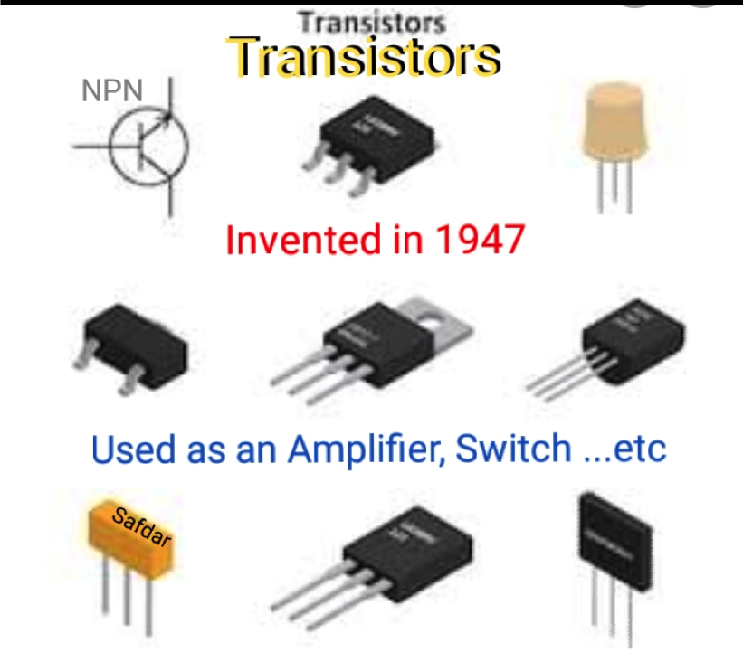

Analog Electronics
Chapter 4: Operational Amplifier
The invention of Transistor in 1947 revolutionized the world of electronics and became the basic building block upon which Modern computer technology rests. It is used as a fast Switch, as an Amplifier, in Oscillator and in a huge variety of applications. It is prevalent is the transceiver. The transceiver used in communication to transmits and receives radio signals for various applications. Cellular phones would be one of the most widely used applications. The tiny radio waves that induce electrical signals at the cellular phone receiver are extremely small in most cases. These signals are processed and amplified by transistor circuits. So, every cell phone uses transistor amplifiers. Other uses would include radio receivers (AM/FM), home audio receivers, cable television, satellite television, audio amplifiers etc.


But the Multistage amplifier using transistors can’t be used in field like medical electronics, instrumentation
Multistage Transistor amplifier is not at all suitable in medical electronics. It is impossible to amplify signals received from human nerves, muscles without OpAmp.
In medicine, bio signals are measured as a voltage generated by nerves and muscles. The measurements involve voltages at very low levels, typically ranging between 1 µV and 100 mV, with high source impedances and superimposed high-level interference signals and noise.
This is when OpAmp come into play – The signals are very small so they need to be amplified to make them compatible with electronic devices (displays, recorders, or A/D converters). These signals can’t be amplified faithfully with cascaded amplifiers using transistors. Noise picked up by transistor amplifier has higher value than volt signal picked up from nerves and muscles. Differential amplifier in OpAmp separate the signal and interferences, remove noise and amplify faithfully.
Op-Amp invented in 1967, are found in many devices including the medical ones such as ultrasound imaging, ECG and others.
An instrumentation amplifier (also known as an “In amp”) also require Differential amplifier which is incorporated in Op-Amp. It measures small signals in the presence of a noisy environment. The noise generally is common-mode noise, so while the signal is differential, an in amp uses its common-mode rejection (CMR) to distinguish the signal of interest from the noise.
a) Simple Block Diagram

b) Block Diagram with More Details

OPAMP is basically a differential amp i.e., it will amplify the voltage which is differentially present between its two i/p terminals. Differential amplifier is the basic building block of an OpAmp.
1stBlock: The first stage is a Balanced (dual) i/p, balanced o/p differential amp. The 2 i/ps are inverting and non- inverting i/p terminals. This stage provides most of the voltage gain of the OP-AMP.
Constant current source is connected to it. 2nd Block: is Balanced input unbalanced output stage differential amplifier. The output of this stage is single ended and with respect to ground. It also increases gain and CMRR.
3rd Block: Emitter follower (Common Collector) has very high input impedance and low output impedance which makes OpAmp an ideal amplifier. The gain is 1. Hence acts as a buffer between two stages and avoids overloading. 4th Block: Level- shifting stage: Due to direct coupling used between the 1st 3 stages, the i/p of level shifting stage is an amplified signal with some non – zero dc level and finally may reach applied voltage. In absence of input, the output may not be zero. Level shifting stage is used to bring dc level to zero volts with respect to gnd.
Because of direct coupling D.C voltage (0 Hz or low frequencies) is not blocked by OpAmp.
5th Block: Output stage: This stage is normally a complementary symmetrical push pull power Amplifier. It increases the magnitude of voltage and raises the current supplying capability of OP-AMP. It also ensures that the o/p impedance of OPAMP is low so that sufficient current to the load without distortion and large output voltage without distortion is possible.
Constant current source is one more block which make sure that constant current is flowing through Common Emitter resistor of first Differential amplifier.
Functions of different block of OpAmp
1st Stage
- Increases the CMRR.
- Provides High Voltage gain
- Provides the input impedance very high.
- Reduce the noise at the output
- Helps to reduce drift i.e., change in output due to changes in temperature, supply voltage and ageing.
2nd Stage
- It further Increases the CMRR
- Adjust the half gain of 1st Stage.
- Error voltage is cancelled in this stage.
3rd Stage
- Consisting of current amplifiers as emitter followers
- Acting as a buffer between two stages.
- Avoid Overloading.
4th Stage
- Suppress the dc level downward to zero volt with respect to ground
- Minimizes the error by suppressing dc level to ground.
5th Stage
- This stage increases the output voltage swing and the current in supplying capability of the amplifiers.
- Provides low output impedance.
Acronym type of Mnemonics to remember
Blocks of OpAmp Block diagram
- A A E L O = A square E L O ( A for Amplifier) = ये ~ ~ लो [ Take this]
- BI - UBO - ELO
The electrical parameter / specifications for the 741 IC is provided in 2 modes. One mode is applicable for the normal operation of the IC at room temperature of 25°C. The other mode is applicable for a commercial temperature range from 0°C to +70°C. We will be discussing all these parameters at normal temperature mode and at supply voltages of +VCC = +15V and -VEE = -15V. It is possible to operate the 741 on a single rail supply also.
-
Input Offset Voltage
When both the inputs of OpAmp are grounded, the output must be zero.
When both the inputs of OpAmp are grounded, the output must be zero. Input offset voltage is the voltage that is applied between the two input terminals of the op-amp to null the output. It is always better to have smaller values of input offset voltage and this indicates that the input terminal are matched better. Lowest values are 15uV for an ideal precision op-amp and the maximum value is 6 mV dc.
- Output offset voltage is the dc voltage between two output terminals (or the output terminal and ground for circuits with one output) when the input terminal(s) are grounded.
-
Input Offset Current
Input Offset Current is the algebraic difference between the currents into the inverting and non-inverting terminals.
Input Offset Current, Ios = |IB+| – | IB-|IB+ = Non-inverting input current
IB- = Inverting input current
The maximum input offset current value for 741 IC is 200nA. This value decreases as the matching between the two input terminals is improved and may reduce down to almost 6nA.
-
Input Bias Current
Input bias current is the average value of the inverting and non-inverting current.
Input Bias Current, IB= (IB1+ + IB-)/2
Ideally both input currents must be zero. Since no two transistors can be identical in parameters, IB1 & IB2 are not equal.
Typical value is 80 nA. Maximum input bias current is 500nA and minimum value is ±7nA. -
Slew Rate (SR)
Slew Rate is one of the most important parameters for selecting op-amps for high frequencies. SR is the maximum rate of change of output voltage per unit of time and is expressed in volts per microseconds.
Slew Rate, SR = dVo/dt Slew rate ensures the circuit accommodates fast output rises & reduces distortion.
By calculating slew rate, we can easily find out the rate in which the output of the op-amp changes in response to changes in the input frequency. The slew rate changes with change in voltage gain and is usually specified at unity gain. The slew rate of an op-amp is always fixed. Hence, if the slope requirements of the output signals are greater than the slew rate, then distortion occurs. In the case of the 741 IC the slew rate is 0.5V/uS, which is very small. This is one reason why the 741 IC is considered not suitable for high frequency applications, such as oscillators, comparators, and filters.

A typical general-purpose device may have a slew rate of 10 V / microsecond. This means that when a large step change is placed on the input, the electronic device would be able to provide an output 10-volt change in one microsecond.
-
Common Mode Rejection Ratio (CMRR)
CMRR is the ratio of the differential voltage gain to the common mode voltage gain.
CMRR = Differential Voltage Gain (Ad)/ Common Mode Voltage Gain (Acm)
If the value of CMRR is high, there is better matching between the 2 input terminals. For 741 IC, CMRR is 90dB. High CMRR helps to reject common mode signal such as noise. -
Supply Voltage Rejection Ratio (SVRR)
The change in the op-amp’s offset voltage caused by variations in supply voltage is called SVRR. The change in supply voltage can be denoted by dV and the corresponding change in input offset voltage can be denoted by dVio.
SVRR = Change in input offset voltage (dVio) / Change in supply voltage (dV)
For 741 IC, SVRR = 150uV/V.
The lower the value of SVRR, the better will be the op-amp performance. -
Output Voltage Swing
The output voltage swing of the 741 IC is a 26-volt peak-to-peak undisturbed as sine wave for ac input signals (that is a value between +13V and -13V), for a load resistance value greater than or equal to 2kilo ohms. This range shows the values of positive and negative saturation voltages of op-amp. The op-amp voltage swing value will not be greater than the supply voltage +VCC and -VEE.
-
Op-Amp Bandwidth, Gain Bandwidth Product & Frequency Response
The bandwidth of any circuit is of paramount importance that needs to be considered during the electronic circuit design process.
When designing the electronic circuit, it will be seen that the bandwidth of the circuit is related to the gain. Too much gain and the bandwidth will be low, less gain and the bandwidth that can be achieved is much higher.
As any op amp has limited bandwidth, it is necessary to carefully consider the gain, bandwidth, and frequency response at the outset of the design of any circuit.
Operational amplifiers themselves when operating in open loop mode only have a very limited bandwidth before the gain starts to fall. However, by using negative feedback, the huge gain of the amplifier can be used to ensure that a flat response with sufficient bandwidth is available.Op-amp Bandwidth
Although op amps have a very high gain, this level of gain starts to fall at a low frequency. The open loop breakpoint, i.e., the frequency at which the gain has fallen by 3 dB is often only a few Hz.
741 op amp has an open loop breakpoint around 6Hz. Beyond this the response falls at a rate of -6dB/octave or -20dB/decade.
Note: an octave is a doubling in frequency, and a decade is a ten-fold increase in frequency and therefore these two figures are two ways of expressing the same characteristic.
By adopting the correct approach during the electronic circuit design, the flat bandwidth of the complete circuit, i.e., the op amp and the additional electronic components can be made to be very flat over the required bandwidth.
Effect of feedback on Op-amp Bandwidth- When designing a real circuit using an op amp, negative feedback is used to give controlled levels of gain. Applying this feedback enables the very high gain to be traded for bandwidth. In this way, very flat frequency response curves can be achieved within the required bandwidth.
Figure: Open loop, Closed feedback Loop Op- amp gain and frequency response.
Op-amp Gain Bandwidth product
When designing an op amp circuit, a figure known as the op amp gain bandwidth product is important.
The op amp gain bandwidth product is generally specified for a particular op amp type an open loop configuration and the output loaded:GBP=Av x fGBP= Av x f [f = cut off frequency (Hz)]
The op amp gain bandwidth product is constant for voltage-feedback amplifiers. However, it is not applicable for current feedback amplifiers because relationship between gain and bandwidth is not linear. Therefore, decreasing the gain by a factor of ten will increase the bandwidth by the same factor.
What is the unity gain frequency of an amplifier?
If the GBWP of an operational amplifier is 1 MHz, it means that the gain of the device falls to unity at 1 MHz. Hence, when the device is wired for unity gain, it will work up to 1 MHz (GBWP = gain × bandwidth, therefore if BW = 1 MHz, then gain = 1) without excessively distorting the signal.The gain-bandwidth product (GBW) is calculated by multiplying the absolute value of the gain with ω. which shows that the gain-bandwidth product is a constant, because it is a product between two constants: the op amp open-loop gain and the corner frequency.
-
Open-loop and closed-loop gains of an Op-amp
Op-amps have a high gain (around 105, or 100 dB). To achieve stable operation, op-amps are used with negative feedback. The gain of an op-amp without feedback is called the open-loop gain whereas the gain of an op-amp with a feedback circuit is called the closed-loop gain.

The following are the basic specifications of IC 741:
- Supply Voltage: Requires a minimum voltage of 5V and can withstand up to +/- 18V
- Input Impedance: About 2 Mega Ohms
- Output impedance: About 75 Ohms
- Input bias current: 80 nA
- Voltage Gain: 200,000 for low frequencies
- Maximum Output Current: 20 mA
- Input Offset voltage: Ranges between 2mV and 6mV
- Slew Rate: 0.5V/microsecond
- CMRR: 90 dB
- Unity gain frequency: 1MHz
Ideal values are either zero or infinite.
Practical values are between 0 and infinite.
- Infinity common-mode rejection ratio so that the output common-mode noise voltage is zero.
- Infinity slew rate so that output voltage changes occur simultaneously with input voltage changes.
- Infinity input impedance Zi. so that almost any signal source can be drive it and there is no loading of the preceding stage.
- Infinity bandwidth so that any frequency signal from 0 to ∞ Hz can be amplified without attenuation.
- Infinite Open loop Voltage Gain A0.
Characteristics of Ideal OpAmp (Infinity Values)
- Zero output impedance Zo. so that the output can be drive an infinity number of other devices.
- Zero Input offset voltage (Zero output voltage when input is zero.
- Zero drift of characteristics with temperature.
- Zero Input bias current
- Zero Input offset current
- Zero Response time
- Perfect Balance, i.e., the differential voltage in inverting and non-inverting terminals be zero.
Characteristics of Ideal OpAmp (Zero Values)
Ridiculous and Acronym type Mnemonics to remember ideal characteristics of Op-Amp.
- For infinite Values:
- CM Running Slow in BaG for Infinite time.
- CMRR Slew Bandwidth Impedance G
- 1 2 3 4 5
- Remaining parameters have Zero values.
Imagine CM running in big Bag.

Inverting Amplifier
-
Consider input Loop
It is closed path consisting Applied Voltage source Vin, Resistor R1 and Current Iin.
Inverting input, Point A, is at ground. (Virtual ground concept)
I = V/ R.- - - According to Ohm's Law.
I = Difference of Potential across R / Resistance
Iin = (Vin – Va) /R1Iin = Vin / R1 since Va = 0 equation 1
Now feedback path Loop.
It is closed path consisting Output Voltage Vo, Resistor R2 and Current If.
Inverting input at Zero potential.( Since Virtual ground.)
Io = (Va-Vo) /R2Io = - Vo/ R2 since Va = 0 eqn 2 (According to Ohm law)
From KCL, Sum of currents at any node/Junction is Zero.
At point A, Iin - If – Ia = 0 (Since Incoming current is positive, Outgoing current Negative.)
Current Ia in inverting terminal is Zero (Since input impedance of Op-Amp is infinite)
Iin – If – Ia = 0
Iin – If = 0Iin = If - - -- -- KCL eqn at point A
Substitute Iin and If in above equation. (Equations 1 & 2)
Vin / R1 = - Vo/R2
Since we want to find Voltage gain Av and it is ratio of output voltage and input voltage.
Voltage gain Av = Output Voltage/ Input voltage
Av = Vo/Vin = - R2/ R1And Output voltage
V0 = Vin (- R2/ R1) = - R2/R1 Vin
From above equation we see that unlike in Transistor, in Op-Amp voltage gain is decided by external resistances.
We can change gain very easily just by changing Resistor(s).
e.g for gain 10 if R = 10 K , Ri = 1K
for gain 5 , if R = 10 K , Ri = 2 K

-
Consider input Loop 1
It is closed path consisting Voltage source Vin, Resistor Rin and Current Iin. Inverting input, Point A, is at voltage Vin (Since infinite gain, same as Virtual ground concept in Inv. Amplifier)
I = V/ R.- - - According to Ohm's Law.
Iin = Difference of Potential across Rin / Rin
Iin = (Vin – 0) / Rin
Iin = Vin / Rin equation 1
Now Consider feedback path Loop 2
It is closed path consisting Output Voltage Vo, Resistor Rf and Current If. Inverting input at Voltage Vin . ( Since infinite gain, same as Virtual ground concept in Inv. Amplifier)
If = (Vo - Vin) /Rf
If = (Vo -Vin) /Rf since VA = VB eqn 2 (According to Ohm law)
From KCL, Sum of currents at any node/Junction is Zero.
At point A, - Iin + If - Ia = 0 (Since Incoming current is positive, Outgoing current Negative.)
Current Ia in inverting terminal is Zero (Since input impedance of Op-Amp is infinite)
- Iin + If – Ia = 0. (Note Minus sign before Iin.)
- Iin + If = 0
Iin = If - - -- -- KCL eqn at point A
Substitute Iin and If in above equation. (Equations 1 & 2)
Vin / Rin = (Vo – Vin) / Rf
Since we want to find Voltage gain Av and it is ratio of output voltage and input voltage.
Voltage gain Av = Output Voltage/ Input voltage
Av = (Vo – Vin) /Vin = Rf/ Rin
= Vo/Vin – Vin / Vin = Rf/ Rin
= Vo / Vin – 1 = Rf / Rin
Av = Vo / Vin = 1 + Rf / Rin
And Output voltage
V0 = Vin (1 + Rf / Rin)We can change gain very easily just by changing Resistor(s).
e.g for gain 11 if Rf = 10 K , Ri = 1K
for gain 6 , if Rf = 10 K , Ri = 2 K.

-
Consider input Loop
-
Inverting Adder
Note : Before proceeding to derivation please see Inverting amplifier derivation for details.

Consider input Loops
It is 3 closed paths consisting 3 Applied Voltage sources V1, V2 & V3, 3 Resistors R1,R2,R3 and 3 Current I1, I2, I3.
Sum of these currents = Iin = I1 + I2 + I3 = (V1/ R1) + (V2/R2) + (V3/ R3)
Inverting input, Point A, is at ground. (Infinite impedance; Virtual ground concept)
I = V/ R.- - - According to Ohm's Law.
I = Difference of Potential across Resistor / Resistance
Iin = (Vin – Va) /R1
Iin = Vin / Ri since Va = 0
(V1/ R1) + (V2/R2) + (V3/ R3) = Vin / Ri equation 1
Now Consider feedback path Loop.
It is closed path consisting Output Voltage Vo, Resistor Rf and Current If.
Inverting input at Zero potential.( Since Virtual ground.)
If = (Va-Vo) /R2
If = - Vo/ Rf since Va = 0 eqn 2 (According to Ohm law)
From KCL, Sum of currents at any node/Junction is Zero.
At point A, Iin - If – Ia = 0 (Since Incoming current is positive, Outgoing current Negative.)
Current Ia in inverting terminal is Zero (Since input impedance of Op-Amp is infinite)
Iin – If – Ia = 0
Iin – If = 0
Iin = If - - -- -- KCL eqn at point A
Substitute Iin and If in above equation. (Equations 1 & 2)
Vin / Rin = - Vo/Rf
Vo/Rf = - (V1/ R1) + (V2/R2) + (V3/ R3)
Vo = -Rf (V1/ R1) + (V2/R2) + (V3/ R3)
II R1 = R2 = R3 = Rin
Vo = -Rf/Rin (V1 ) + (V2) + (V3)
If Rf = Rin
Vo = - (V1 + V2 + V3)
Output Voltage = Sum of 3 input Voltages.
Minus sign is because of Inverting mode of OP-AMP.
A difference amplifier or OpAmp subtractor amplifies the difference between two input signals and rejects any signals common to both inputs.
If Gain is 1 then it acts as a Subtractor.

Above is OpAmp subtractor circuit.
Applying Kirchhoff Current Law at node 1, and Using Ohm’s Law we get,

We have written this equation by assuming that there is no current entering in the inverting terminal of the op amp since input impedance Zi = Infinite Now, by simplifying the above equation by bringing Vo on LHS, we get,

[Above got after Multiplying both sides by R2. Vo = (V.R2/R1 ) + V – (V1.R2/R1) ]

Here we got Vo in terms of Input V1 and V.
This V should be in terms of V2
Now, by applying Kirchhoff Current Law at node 2, and Using Ohm’s Law we get,

Above got after Multiplying both sides by R3]. We know that, in ideal op amp, voltage at inverting input is same as the voltage at non inverting input. (Virtual Ground Concept) Hence we get,
V = V’ - ----- (a)
Using equations (i) , (ii) and (a)
So, now from equation (i) and (ii),

[ Explanation of upper Denominator term….
R4/(R3+R4) = R4/R4/ (R3/R4+R4/R4)
After dividing Numerator and Denominator by R4
= 1/(1+R3/R4) ]
Also, Numerator 1+(R2/R1)
= [(R1/R2) (1+ R2/R1)] ÷ [R1/R2] After Multiply & divide
By R1/R2
= (R1/R2)+1 ÷ R1 / R2
= R2/R1 . (1+ R1/R2)
The difference amplifier rejects signal common to both inputs. That means, if polarity and magnitude of both input signals are same, the output must be zero.

This condition must be satisfied only when,

In that case, equation (iii) becomes,

Again, if we make, R1=R2, then equation (iv) becomes,

So, if R1 = R2 and also R3 = R4 then the difference amplifier becomes a perfect subtractor, which subtracts directly the input signals.

Finally, the circuit of op amp substractor becomes.
The integrator with voltage gain 1 produces an output voltage that is proportional to duration of the input signal.
In inverting, non-inverting amplifier, an adder or subtractor type circuit used just pure resistances in both the input and the feedback loop.
But in Integrator in feedback path Capacitor, C non-linear passive components is used.

In Integrator, the magnitude of the output signal is determined by the length of time a voltage is present at its input as the current through the feedback loop charges or discharges the capacitor as the required negative feedback occurs through the capacitor.
Let us derive equation for output voltage Vo.
Note: For all inverting OP-AMP derivations we start from equation If = - Iin
Consider input Path
Using Ohms law, KCL ( Please see inverting OP-AMP derivation for more details)

Consider Feed back path where Capacitor is connected.
I = dQ / dt . From definition – Rate of flow of charge is current.
If = dQ / dt
And Q = CV.
dQ/ dt = C[ dVo/dt] , C is Capacitor value. It is constant. Since once it is placed in circuit we don’t change it.
If = - dQ/dt and Iin = Vin/ Rin
C [dVo/dt ]= - Vin/ Rin
Integrating both the sides.
Vo = - [1/Rin.C] integral of Vin dt ( draw symbol of integration where integral is written)
If product Rin.C = 1 then Vo = integral of Vin. This is called passive integral.
If Rin = 1 M Ohm and C = 1 micro farad then product RC= 1
Other way……....

From which we derive an ideal voltage output for the Op-amp Integrator as:

From which we derive an ideal voltage output for the Op-amp Integrator as:

The circuit of operational amplifier integrator allows precise integration of the i/p signal to be attained. The applications of this circuit mainly include analog computers. Nowadays, an integration task is mandatory in analog applications, wherever the IC circuit is the perfect solution.

The op-amp differentiator has several applications of electronic circuit design. This circuit is used in analog computers where it is capable of providing a differentiation operation on the analog input voltage. This can be used in process instrumentation to check the rate of change of different points. Op-amp differentiator may be required in signal conditioning applications. Thus, from the above information finally, we can conclude that op-amp integrated circuits are linear devices which are perfect for DC amplification, and used commonly in filtering, signal conditioning, mathematical operations like integration, differentiation, etc. Here is a question for you, what are the different types of an operational amplifier?
Op-amp Integrator Ramp Generator

In an op-amp differentiator circuit, the output voltage is directly proportional to the input voltage rate of change with respect to time, which means that a quick change of the input voltage signal, then the high o/p voltage will change in response. As the output of an op-amp differentiator circuit is proportional to the change in input. When the inputs of the differentiator circuit are standard waveforms like sine, square, triangular then the output waveforms will be very different.

If the input is square wave then there will be small spikes in other output waveforms. These spikes will be imperfect with the slope of the ends of the input waveform and maximum circuit output.
If the input is triangular waveform then the output changes to a square waveform with the increasing and declining levels of the input waveform.
If the input is sine wave from then it is changed to a cosine waveform which gives the signal with 90° phase shift, which is very useful in some situations.
Operational Amplifier Differentiator Circuit
The operational amplifier circuit generates an output voltage which is proportional to the time derivative input voltage. So this op-amp circuit is called as the differentiator.
Assume the ground terminal which is denoted with G in the circuit, where the flow of current through the ground terminal is equivalent to the flow of current out, we can write is as

In the above circuit, the op-amp node voltage at inverting terminal is zero then the flow of current through the capacitor can be written as
Iin = If
Where If = -Vout/Rf
The capacitor charge equals the voltage with capacitance times across the capacitor
Q = C . Vin
Therefore the charge rate change is
dQ/dt = C dVin/dt
But the dQ/dt is the current through the capacitor
-Vout/Rf = C dVin/dt
An ideal output voltage (Vout) for the operational amplifier differentiator is written as
Vout = – Rf C dVin/dt
Thus, the output voltage is a constant input voltage derivative – Rf C times of the input Vin voltage with respect to time. Here sign minus (–) specifies the phase shift (180o) as the input signal is given to the input inverting terminal of the op-amp.

In most of the operational amplifier circuits, the feedback connection which is used is because of resistive in nature by a straight resistive line outlining as a minimum portion of the network. But for the op-amp integrator, the feedback will be provided by the capacitor among the input and output of the operational amplifier.

As an op-amp integrator performs the function of mathematical integration. However, it can be used in analog computers. The operation of this circuit is, it generates an output which is proportional to the input voltage with time. So the output voltage will be determined with the primary output voltage at any time.
From the above waveforms, it can be observed that as the input residues at zero. but when a step i/p voltage is given to the input, then the output will be raised. Similarly, when the step input voltage comebacks to zero position, then the output residue at the voltage it last achieved.
Operational Amplifier Integrator Circuit
The operational amplifier integrator circuit can be built with an operational amplifier and a capacitor among the inverting input as well as the output, & a resistor from the inverting i/p to entire input of the circuit.

One of the applications of an op-amp is an integrator; it can be formed by altering the positions of resistor and capacitor. This circuit can generate an o/p voltage which is proportional to the input voltage time integral. Thus this circuit is named as an integrator circuit. Assume the ground terminal which is denoted with G in the above circuit, where the flow of current through the ground terminal is equivalent to the flow of current out, we can write is as
If Iin + If = 0
Iin = – If
Vin –Va/R = -C d/dt (V0-Va)
Where Va = 0
Vin/R = -C d/dt V0
Integrate the above equation, we can get the following
1/R
Or
Vout = −∫Vin/R C dt +c
Therefore the Vout voltage is equal to the constant -1/RC and integral of input voltage Vin
- Question1
- question 2
- question 3